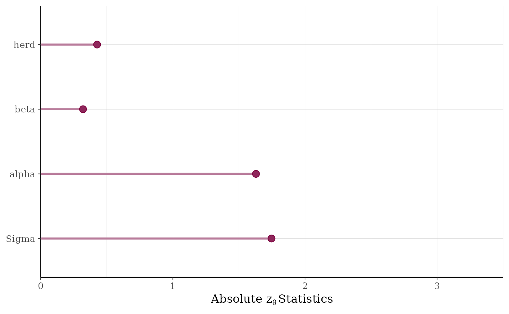

The pp_validate function is based on the methods described in
Cook, Gelman, and Rubin (2006) for validating software developed to fit
particular Bayesian models. Here we take the perspective that models
themselves are software and thus it is useful to apply this validation
approach to individual models.
Arguments
- object
A fitted model object returned by one of the rstanarm modeling functions. See
stanreg-objects.- nreps
The number of replications to be performed.
nrepsmust be sufficiently large so that the statistics described below in Details are meaningful. Depending on the model and the size of the data, runningpp_validatemay be slow. See also the Note section below for advice on avoiding numerical issues.- seed
A seed passed to Stan to use when refitting the model.
- ...
Currently ignored.
Details
We repeat nreps times the process of simulating parameters and data
from the model and refitting the model to this simulated data. For each of
the nreps replications we do the following:
Refit the model but without conditioning on the data (setting
prior_PD=TRUE), obtaining draws \(\theta^{true}\) from the prior distribution of the model parameters.Given \(\theta^{true}\), simulate data \(y^\ast\) from the prior predictive distribution (calling
posterior_predicton the fitted model object obtained in step 1).Fit the model to the simulated outcome \(y^\ast\), obtaining parameters \(\theta^{post}\).
For any individual parameter, the quantile of the "true" parameter value with respect to its posterior distribution should be uniformly distributed. The validation procedure entails looking for deviations from uniformity by computing statistics for a test that the quantiles are uniformly distributed. The absolute values of the computed test statistics are plotted for batches of parameters (e.g., non-varying coefficients are grouped into a batch called "beta", parameters that vary by group level are in batches named for the grouping variable, etc.). See Cook, Gelman, and Rubin (2006) for more details on the validation procedure.
Note
In order to make it through nreps replications without running
into numerical difficulties you may have to restrict the range for randomly
generating initial values for parameters when you fit the original
model. With any of rstanarm's modeling functions this can be done by
specifying the optional argument init_r as some number less than the
default of \(2\).
References
Cook, S., Gelman, A., and Rubin, D. (2006). Validation of software for Bayesian models using posterior quantiles. Journal of Computational and Graphical Statistics. 15(3), 675–692.
See also
pp_check for graphical posterior predictive checks and
posterior_predict to draw from the posterior predictive
distribution.
color_scheme_set to change the color scheme of the
plot.
Examples
if (.Platform$OS.type != "windows" || .Platform$r_arch != "i386") {
# \dontrun{
if (!exists("example_model")) example(example_model)
try(pp_validate(example_model)) # fails with default seed / priors
# }
}
#> Warning: Bulk Effective Samples Size (ESS) is too low, indicating posterior means and medians may be unreliable.
#> Running the chains for more iterations may help. See
#> https://mc-stan.org/misc/warnings.html#bulk-ess
#> Warning: Bulk Effective Samples Size (ESS) is too low, indicating posterior means and medians may be unreliable.
#> Running the chains for more iterations may help. See
#> https://mc-stan.org/misc/warnings.html#bulk-ess
